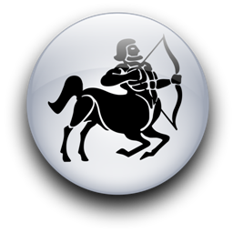
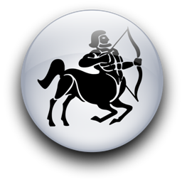

Женщина Стрелец и Мужчина Дева
-

 

Ну, пожелайте удачи мужчине-Деве, который, забыв осторожность, поставил на капризную, норовистую лошадку. Ставка велика - его драгоценная независимость и покой холостяцких вечеров. Но ни ради нее, ни ради кого-нибудь еще он никогда не пожертвует чувством собственного достоинства, самоуважением.
Его несколько обескураживает простодушная откровенность ее высказываний. Она молотит по его самолюбию, как боксер по груше, с тем же веселым энтузиазмом. Он уже морщится от тупой боли под ложечкой. Но наш герой превозмогает растерянность и дает отпор. Он не станет слушать, что она думает о его квартире, носках, ушах, волосах, осторожных и скромных мечтах, машине, привычке покупать по случаю мыло цвета слоновой кости. Она находит его фамилию достаточно смешной? Он ей достойно ответит, и скажет твердо и сурово: "Нет. Моя фамилия не смешная". И не будет ли она так любезна закрыть свой рот и подумать немного? Если у нее есть хоть капля здравого смысла, она, возможно, не откроет рот до тех пор, пока не решит сказать ему что-нибудь приятное. Как ни странно, ей это понравится. Она ищет человека и решительного, и нежного, который умел бы поставить эту девушку на место, не подавляя ее дружелюбия, энтузиазма, не осмеивая ее пламенных идеалов. Это деликатная задача, но она по плечу мужчине-Деве, который владеет таким искусством дипломатии.
К счастью, он уже сделал первый шаг в правильном направлении - дал ей понять, что не худо бы притупить наконечники стрел Юпитера и не так сильно натягивать тетиву, и что необдуманные замечания могут ранить. Он сделал это в характерной для Дев манере: они крайне вежливы, даже когда отчитывают кого-нибудь.
Она, конечно же, раскаялась. У нее и в мыслях не было, чтоб уязвить его самолюбие - просто ее несколько заносит на поворотах. Наверное, она даже всплакнула. Ее легко довести до слез.
Стрельцу нужен кто-то, кто бы понимал ее истинное "я" и не судил слишком строго за прямоту и непосредственность. Поэтому суровая нотация Девы не поссорила, а, напротив, сблизила их. Браво, Дева! Примите наши поздравления. Но не спешите праздновать победу.
Она обожает розыгрыши. Стрельцы обоих полов - большие любители каламбуров и розыгрышей. Надо отдать им должное, они потешаются не только над другими, но и над собой. Некоторые дурачества Стрельцов безобидны и забавны, но, вообще говоря, с Юпитером шутки плохи.
Мужчина-Дева родился под женским солнечным знаком, и это совсем не означает, что он женоподобен, просто он благоразумен и восприимчив. Женщина-Стрелец родилась под мужским Солнечным знаком и управляется мужской планетой Юпитер. Двойное женское влияние против двойного мужского.
Он должен крепко держать поводья, чтобы своенравная лошадка не взбрыкнула. Она и сама втайне ждет этого и готова подчиниться любящим, добрым рукам.
Двойное женское влияние, нежная мудрость помогут ему понять, что женщина-Стрелец - доверчивое и ранимое существо. И ее изматывает бешеный галоп. Она нередко спотыкается и падает.
Она не пожалеет, что доверилась ему. Девы всегда держат обещания. Это придется по душе Стрельцу, который не переносит льстецов и жуликов.
Да, и вот что еще: она феноменально удачлива. Даже ошибки и промахи идут ей во благо. Поэтому пусть он не слишком тревожится из-за тех невероятных глупостей, на которые ее толкают избыток доброжелательности и бурный энтузиазм.
Есть ли у них шанс достичь физической гармонии? Несомненно, если он не отпустит поводья, а у нее достанет такта, чтобы не оскорбить его чувствительность и целомудрие. Ее пылкость, его глубина чувств - разве этого мало для счастья? Возможно, она пожалуется, что он чересчур выдержан и невозмутим. А он подумает, что все эти бури в стакане воды слишком утомительны и пора положить им конец.
Но кто тогда разбудит его рождественским утром, чтобы огорошить сюрпризом? Она похожа на маленькую девочку с этими румяными от мороза щеками и ягодами падуба в волосах. В руках ее одеяло, оттуда выглядывают... шесть черных сверкающих носов. Силы небесные! Да там копошатся щенки сенбернара! Ее глаза сверкают, как звезды, восхищением и детским восторгом. Он не забудет это холодное зимнее утро, когда она бегала вприпрыжку по двору, собирала снег в пригоршни и подносила к лицу. Как вкусно от нее пахло свежестью! Как мило она тормошила его, полусонного, весело уговаривая одеться и спуститься, потому что она уже развела огонь... Он чувствует, что не может проглотить комок, застрявший в горле. Нет, он не представляет себе жизни без нее. Кто защитит ее от мира и от самой себя? Она такой ребенок с этими безумными шутками и манерой по-детски хлюпать носом, когда плачет...
И у нее встанет комок в горле, когда она вспомнит, как он навещал ее во время болезни. Принес крошечный букетик фиалок и был так смущен. Не знал, куда девать руки, краснел и упорно смотрел в пол. Только пару слов и смог выдавить из себя... Ну да, он бранит ее за расточительность, он не любитель компаний. Он не любит пустые разговоры, но с ней откровенен. Плохо, что она разболтала подруге кое-что, доверенное только ей. Он ужасно рассердился. Полдня рта не раскрывал. Но ничего... Она больше не будет... Она, действительно, больше не будет - Стрельцы очень сообразительны.